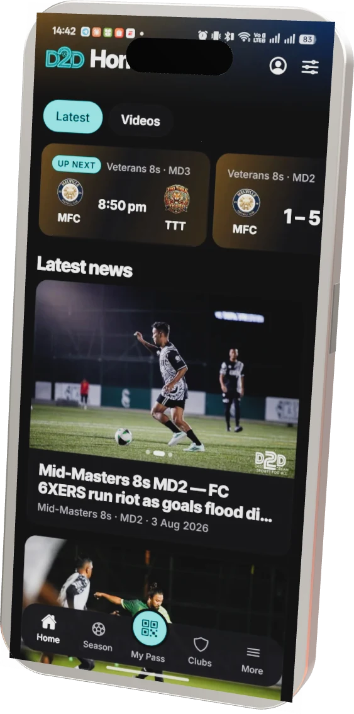

Real WebGL. The body is generated in code at true iPhone 17 Pro Max dimensions — 163.3 × 77.6 × 8.75 mm, 12 mm corner radius — with a chamfered titanium rail, a clearcoat display, and a three-lens plateau. Reflections come from a procedural studio environment, so the whole scene downloads no model and no HDR map. Scroll drives the sweep; the pointer nudges it.

The league runs, the results land in a spreadsheet, and nobody outside the committee can see any of it.
A native app wired to the same backbone as the admin suite. One result entry, everywhere at once.
Real users, real fixtures, real money.
| Added weight | 143 KB gzipped (three.js core + scene), loaded only when the stage nears the viewport |
| Model files | None — geometry is procedural, so there is no .glb to fetch or licence |
| Environment | None — reflections use three's procedural RoomEnvironment, not an HDR download |
| Skipped when | prefers-reduced-motion, no WebGL2, deviceMemory < 4 GB, or viewport < 480 px → poster image |
| Frame budget | rAF runs only while the stage is on screen and the tab is visible; DPR capped at 2 |